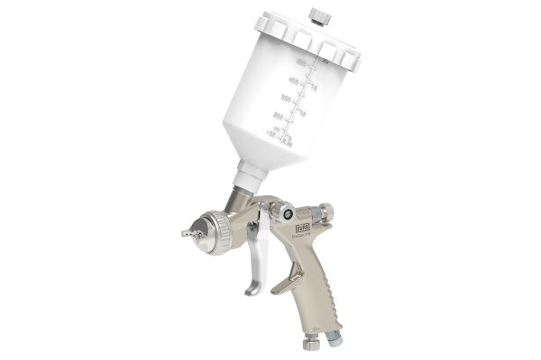
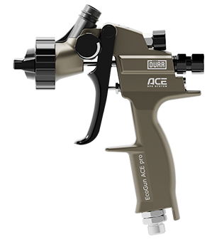
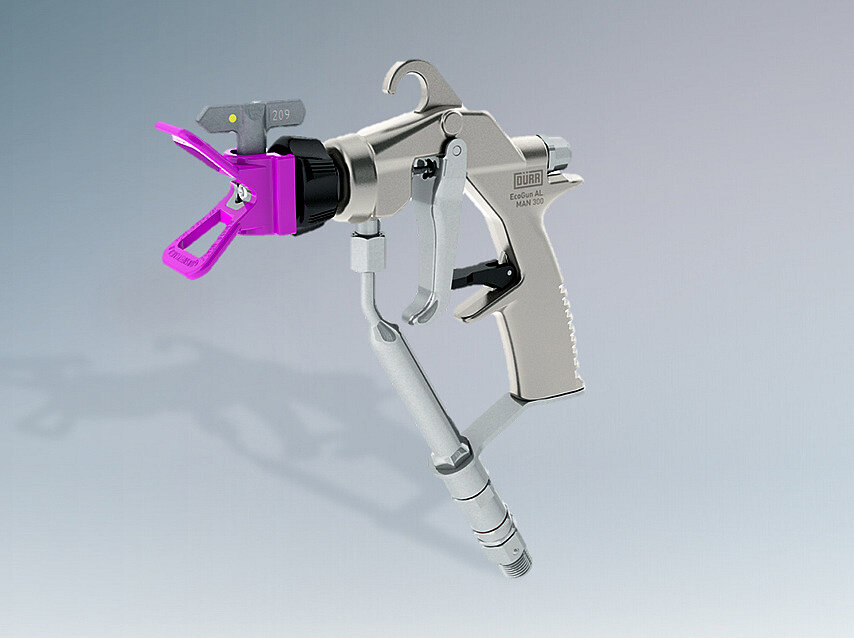
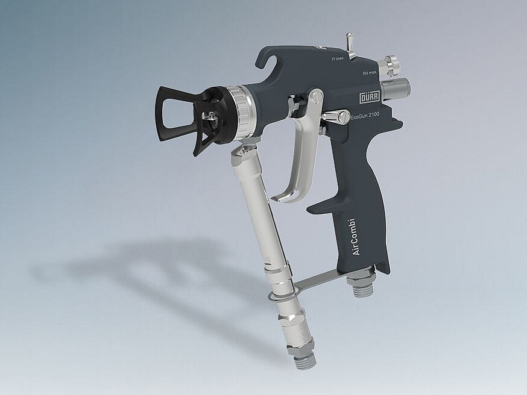
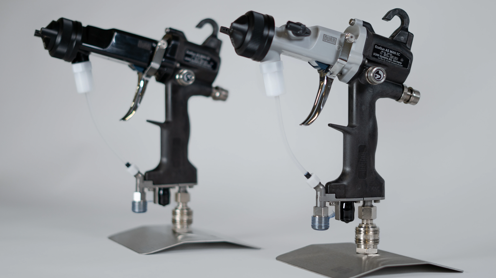
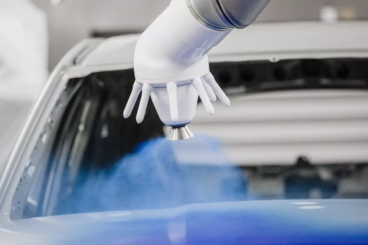
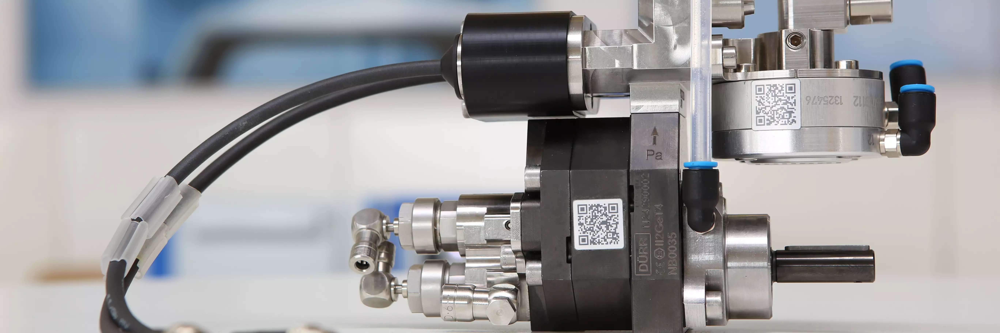
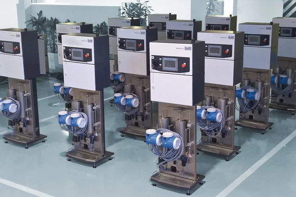

High-precision liquid coating
technology for industrial finishing.
OptiFinish supplies Dürr liquid coating equipment in India — spray guns, pump systems, and electronic dosing for demanding paint applications. OptiFinish supplies hardware only; full liquid plant integration is quoted separately on a per-project basis.

A manual gravity-feed air spray gun suited for smaller coating areas, touch-up work, furniture lacquering, and precise area application. Compact, ergonomic, and reliable across solvent-based and water-based paints. Two models cover different pressure and finish requirements — the 116 for general-purpose use and the 910 for fine-finish applications demanding superior atomisation quality.
- EcoGun 116: gravity feed cup gun; max 6 bar operating pressure; 1–4mm nozzle range
- EcoGun 910: gravity feed; max 8 bar; optimised for fine-finish and low-overspray applications
- Compatible with solvent-based and water-based coatings; variants for enamels, lacquers, and glazes
- Ergonomic trigger design for extended-use comfort; replaceable nozzle and needle sets

A high-transfer-efficiency variant of the Dürr EcoGun AS MAN line, operating at low atomisation pressure for significantly reduced overspray — ideal for applications where material savings and finish quality are equally important. HVLP technology delivers more paint onto the part and less into the exhaust system, lowering operating costs and improving finish uniformity on topcoats and clear coats.
- HVLP: high volume, low-pressure atomisation — maximum transfer efficiency
- Significantly reduced overspray vs conventional air spray — lowers material consumption
- Suitable for topcoats, clear coats, and fine-finish final coat applications
- Compatible with solvent-based and water-based paints; adjustable fan pattern and fluid flow

A high-pressure airless spray gun built for anti-corrosion work on structural steel, heavy machinery, and heavy-duty wood coating — atomises paint by forcing it at high pressure through a small tip orifice with no carrier air. Modular reversible tip design allows tip size changes in the field without tools for different output and pattern width requirements.
- EcoGun 246 / 249: high-pressure hydraulic atomisation — no carrier air required
- Modular reversible tip system — multiple tip sizes for different spray patterns and output rates
- Designed for anti-corrosion primers, epoxies, and bituminous coatings on structural steel
- High material flow rate — suited for large-area coverage at high production speeds

Designed for high-viscosity materials under demanding surface quality requirements — the EcoGun AA is the preferred choice for solid wood furniture finishing, high-build coatings, and applications requiring a fine, controlled finish at high throughput. Combines the material flow capacity of airless with secondary air assist for superior atomisation quality on challenging substrates.
- Handles high-viscosity paints, lacquers, adhesives, and sealants without thinning
- Separate air regulation for round and flat spray pattern selection
- Stainless steel internal material path on auto variant — suitable for aggressive solvents
- Fed by EcoPump VP packages; designed for continuous production line integration

An electrostatic manual spray gun that electrostatically charges atomised paint particles — wrapping them around the part and significantly reducing overspray through electrostatic attraction. Available in DC (Direct Charge) for solvent-based paints and EC (External Charge) for water-based paints — the EC variant uses an external charging electrode to avoid current issues with conductive water-based formulations.
- EcoGun AS MAN DC: direct charge internal electrode — for solvent-based paints
- EcoGun AS MAN EC: external charge electrode — compatible with water-based formulations
- Significant material savings through electrostatic wrap-around effect
- Suitable for automotive, general industry, and consumer goods production lines

A high-speed rotary atomiser delivering ultra-fine, extremely uniform droplet distribution for premium finish quality on automotive body panels and industrial components. Paint is fed to a spinning bell cup rotating at high speed — centrifugal force breaks the paint into an extremely fine mist which is then electrostatically charged and attracted uniformly to the part surface. Confirmed as supplied by OptiFinish.
- Rotary bell cup atomisation — finest droplet size distribution for premium surface quality
- Electrostatic charging for maximum transfer efficiency and wrap-around coverage
- High transfer efficiency — significantly reduces paint consumption vs conventional spray
- Designed for automated production lines with consistent high-volume output requirements

A complete family of air-operated and electric piston, diaphragm, and shovel-plate pumps built for paint circulation, delivery, and transfer in industrial liquid coating environments. Covers everything from low-pressure supply of water-based paints to high-pressure delivery for airless spray and viscous adhesive transfer — available in pre-assembled portable EcoPump Package modules for quick deployment.
- HP Series (horizontal piston): HP 400 (4.2 kg, 8 L/min), HP 800 (5.8 kg, 16 L/min), HP 1600 (8 kg, 32 L/min)
- VP Series (vertical piston): up to 360 bar operating pressure for airless and high-viscosity applications
- AD diaphragm variant for low-shear, pulsation-sensitive applications
- HPE electric variant: DIN EN 12162 certified; motor-driven for mains-powered installations
- Pre-assembled EcoPump Package modules — pressure pot, filter, hose, gun, regulator in one unit

An electronic dosing system for two-component (2K) paint processes — delivering consistently precise mixing ratios across a wide viscosity range, with automatic colour change capability and independent flushing circuits for each component. Eliminates the waste and inconsistency of manual 2K mixing — every shot is precisely dosed by Coriolis or gear flowmeter for volume-controlled accuracy.
- Flow rate range: 40–4,000 cc/min — covers low-flow touch-up to high-volume production
- Coriolis flowmeter or gear flowmeter options for volume-controlled precision dosing
- Pot life monitoring with real-time catalyst ratio tracking and process alerts
- Independent flushing circuits for each component — no premixing chamber, no waste
- Supports water-based and solvent-based 2K formulations across a wide viscosity range

An electronic dosing system for three-component (3K) coating formulations — enabling complex paint recipes with simultaneous precise control of all three component streams, automatic colour change, and real-time pot life monitoring for each individual component. Handles the most complex multi-component industrial coating formulations with the same ease as a standard 2K system.
- Flow rate: 40–4,000 cc/min across all three component streams simultaneously
- Full per-component volume tracking; mixing ratio accuracy across all three streams independently
- Independent flushing circuits for all three components — no premixing chamber required
- Handles water-based, solvent-based, and complex 3K formulations including effect pigments
- Pot life monitoring per component with individual alerts for each stream